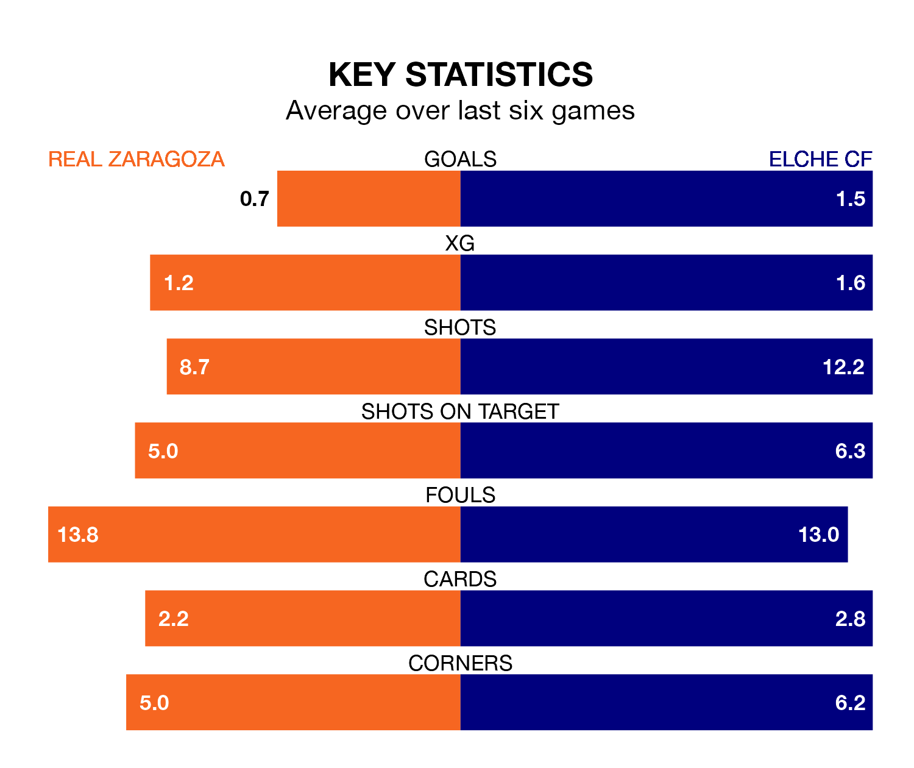

Elche CF make the journey to Estadio de la Romareda to play Real Zaragoza on late Sunday looking to pick up points to end their three-game losing streak.
Elche's struggles have left them with nine points from their last six Segunda División matches, while their opponents have earned four from a possible 18.
In the last 10 years, Zaragoza and Elche have played each other on 11 occasions. They won five each, and they drew once.
On average, Zaragoza scored 1.0 goal and Elche 1.0 in those matches.
Their last meeting was on November 11, when Elche won 2-0 at home.
Elche are seventh in the table after 34 games, of which they have won 15 and drawn eight, earning 53 points.
Zaragoza are eight places behind the away side in 15th, with 10 wins and 11 draws putting them on 41 points.
With 32 goals in 34 games so far this season, the hosts are scoring at below the league average rate with 0.9 goals per game. But they are conceding fewer than average too, letting in 32 goals at a rate of 0.9 per game.
Elche are also below average scorers, with 1.0 goal per game, compared to a league average of 1.1. They have conceded 0.9 goals per game.
Zaragoza's last match was on April 6, a 2-1 loss against Levante UD, with Antonio Moya Vega getting the goal for Zaragoza.
Elche lost 2-0 against Real Oviedo last time out, on April 5.
Sunday's match will be refereed by Adrián Cordero Vega, who has taken charge of 17 Segunda División games so far this season, issuing one red card and booking 98 players. He has awarded six penalties.
The last Zaragoza game Cordero Vega refereed was a 2-0 away loss to Elche CF on November 11. His last Elche match was their 3-0 win at home against AD Alcorcón on March 4.
Updated: 10:01 (UTC), 12/04/24